米子市米原のサイノカミ
米原神社の双体道祖神
最終更新：
米子市米原のサイノカミさんは米原神社にあります。
調査対象の依代は双体道祖神が1基。
その他地主さんなどについての由来を書いた立て看板の内容がかなり面白いですので必見です。
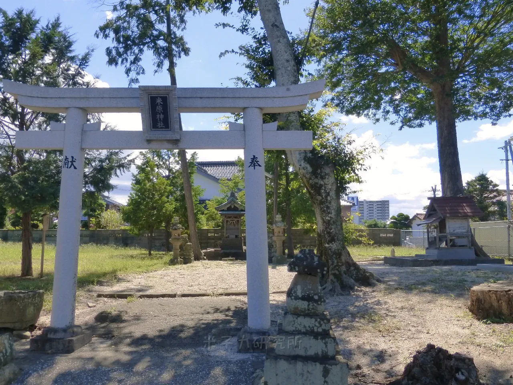
- 地域
- 鳥取県米子市
- 目印
- 米原神社
- 対象
- 双体道祖神 × 1基
- 参考
- 石に刻まれた祈り2
仲睦まじい様子の双体道祖神
中型。
お米的形状の滑らかな自然石を立石にして、ボウル型の彫り込み。
その中に双体神立像が半丸彫りにしてあります。
向かって右の男神は笏、左の女神は扇を所持。
肩抱き。
令和4年現在、米子市内で2番目に若い依代である筈です。
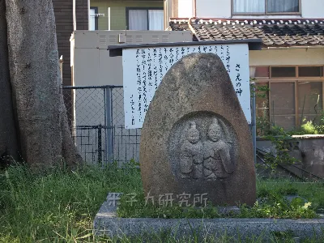
2025-10-10 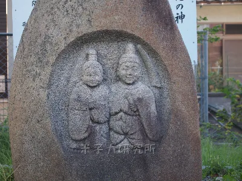
2025-10-10 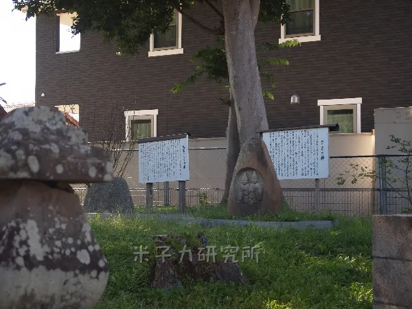
2025-10-10 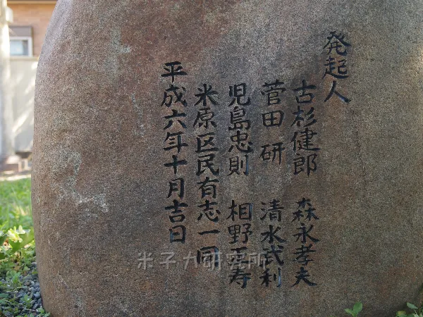
2025-10-10 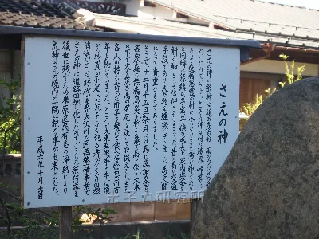
2025-10-10 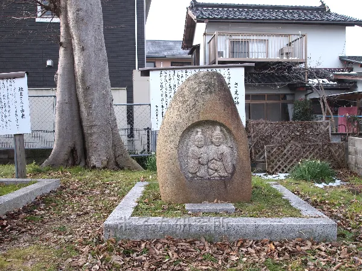
2022-01-15 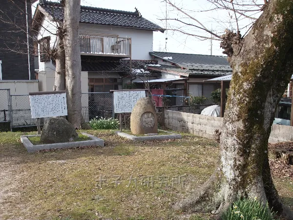
2022-01-15 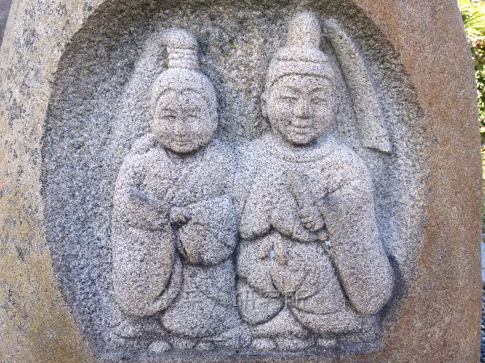
2020-09-14
さえの神と地主さんの由来
さて、ここからが面白いところです。
併設してある立て看板には 祟る であるとか、地主の森が レイラインを形成している （※拡大解釈）であるとか、とんでもない事がサラッと書いてあ（ｺﾞﾝｯ）
ほとんど一直線上としか書いてありませんから。
ﾎﾟｲｯ⌒🔨
さえの神
さえの神の祭神は、猿田彦の命、雨のウヅメの命といわれています。
さえの神は村の境界峠等にあって疫病悪霊が村に入らないように防ぐ神であると同時に縁結び、子宝、子供の成長と家内安全を祈る神として信仰されてきました。
昔は馬が交通手段であり、人や物を運搬してきました。
馬は人間にとって貴重なものでありました。
そこで、12月15日（祭日）には馬に感謝の念と各家庭の無病息災を祈って藁で馬を作り大木の下で火を焚き馬の尻尾を焼いてお供えをし、また各人が持ち寄った団子を焼いて食べた風習が何百年も続いていました。
ところが大東亜戦争の半ば頃から物資が不足し、だれともなく祀る者がなくなり自然消滅しました。
時代は変わり大沢川の区画整備事業でさえの神は道路、田、畑と化したので、こうした祭行事を後世に残すため米原区民有志の浄財により荒神さんの境内の一隅に祀る事が出来ました。平成6年10月吉日
地主さんの由来
地主さんは「じのっさん」と称し、家屋敷を守る神、また土地の神として祀られている。
地主さんは、多くは屋敷の裏の隅や、藪の中に祀られている。
家の先祖あるいは戦死した武士の墓、五輪さんの破片など古墓を祀ったものとか、屋敷や田畑の土地の主を祀ったものという。
祀り方は同族が共同で祀ったり、特定の家だけで祀るなどさまざまである。
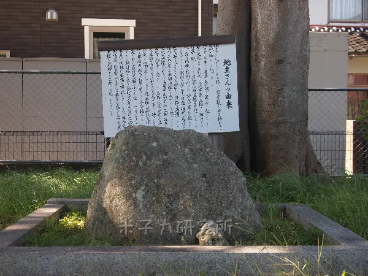
2026-09-25 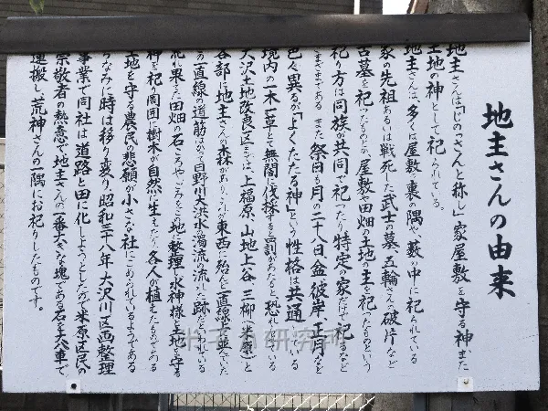
2026-09-25 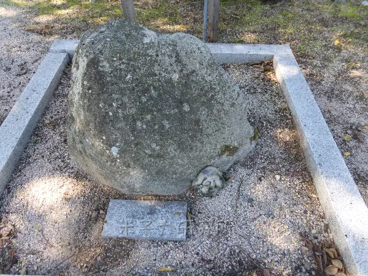
2026-09-25
また祭日も月の28日、盆、彼岸、正月など色々異なるがよくたたる神という性格は共通している。
境内の一木一草とて無闇に伐採すると罰があたると、恐れられている。
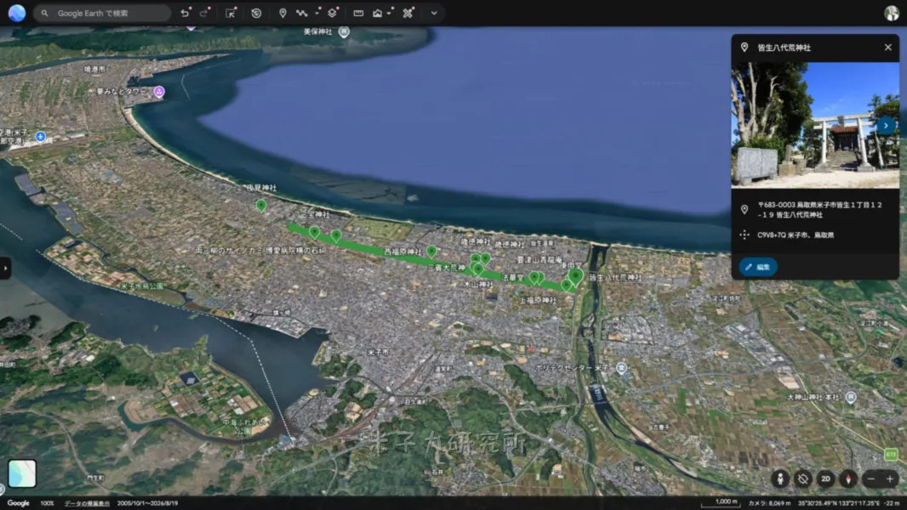
大沢土地改良区までは、上福原、山地上谷、三柳（米原）と各部に地主さんの森があり、これが東西に殆ど一直線上に並んでいた。
この一直線の道筋はかつて日野川大洪水の濁流の流れた跡だといわれている。
荒れ果てた田畑の石ころや、ごみをこの地に整理し、水神様と土地を守る神を祀り周囲に樹木が自然に生えたり、各人が植えたものである。
土地を守る農民の悲願が小さな社にこめられているようである。
ちなみに時は移り変わり、昭和38年大沢川区画整理事業で同社は道路と田に化しようとしたので米原区民の崇敬者の熱意で、地主さんの一番大きな塊である石を大八車で運搬し、荒神さんの一隅にお祀りしたものです。
立て看板より